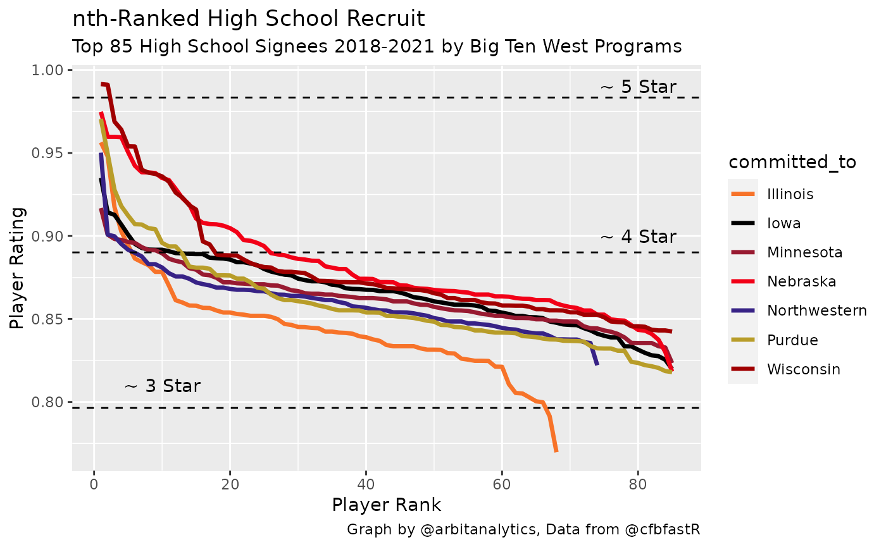

Visualizing Team Talent from Player Recruiting Rankings
Eric Hess -
Arbitrary Analytics


Source: vignettes/nth-rated-recruit.Rmd
nth-rated-recruit.RmdHi cfbfastR users, I’m Eric Hess and I run the Twitter account and blog
called Arbitrary
Analytics. My work focuses on sports analytics mainly for Nebraska
and the Big Ten. Today, I’m going to walk through how I used the
cfbfastR package to make a simple plot of recent recruiting
classes. The final output will give you a quick way to visually
approximate how much talent each school has recruited. I’m going to
assume you have a basic understanding of working with R and that your
development environment is already setup.
We start by loading the packages we need. The cfbfastR
package will provide us with our source of data. The dplyr
package gives us handy data manipulation tools and the ever useful pipe
(%>%) syntax. Finally, ggplot2 will allow
us to make a simple, functional graph of our results.
if (!requireNamespace('pacman', quietly = TRUE)){
install.packages('pacman')
}
pacman::p_load(dplyr, ggplot2, cfbfastR)To create the plot I’m going to use two functions from
cfbfastR. The first is the cfbd_team_info
function. I’m going to pass "B1G" to the function for the
conference argument to get info for just Big Ten teams. The
next function I’m going to use is the
cfbd_recruiting_player function. The apply function allows
me to run the given function for each item in the data frame I pass to
it. In this case I run it for each team in the Big Ten. I’m calling this
function four times to get each year’s class. I’ll combine all of these
into one large data frame with every team’s recruits. For the sake of
simplicity, I am only using High School recruits as shown by the
recruit_type argument. You can also get Prep School
recruits (recruit_type = "PrepSchool") or junior college
recruits (recruit_type = "JUCO").
teams <- cfbfastR::cfbd_team_info() %>%
dplyr::filter(conference == "Big Ten")
schools <- teams$school
yr <- cfbfastR:::most_recent_cfb_season()
year_range <- (yr-3):yr
team_year_df <- expand.grid(year=year_range, school = schools)
tictoc::tic()
all.recruits <- purrr::map2_dfr(
.x = team_year_df$year,
.y = team_year_df$school,
function(.x,.y){
cfbfastR::cfbd_recruiting_player(
year = as.integer(.x),
team = as.character(.y),
recruit_type = "HighSchool"
)
}
)
tictoc::toc()## 25.887 sec elapsed
dplyr::glimpse(all.recruits)## Rows: 1,051
## Columns: 19
## $ id <chr> "114420", "114678", "114756", "114760", "11477…
## $ athlete_id <chr> "4714773", "4826636", "4869962", "4790965", "4…
## $ recruit_type <chr> "HighSchool", "HighSchool", "HighSchool", "Hig…
## $ year <int> 2022, 2022, 2022, 2022, 2022, 2022, 2022, 2022…
## $ ranking <int> 888, 1161, 1231, 1231, 1254, 1254, 1357, 1357,…
## $ name <chr> "Joey Okla", "Owen Anderson", "Ashton Hollins"…
## $ school <chr> "Arrowhead", "Hun School", "George County", "T…
## $ committed_to <chr> "Illinois", "Illinois", "Illinois", "Illinois"…
## $ position <chr> "IOL", "TE", "ATH", "QB", "WR", "EDGE", "CB", …
## $ height <dbl> 75.0, 76.0, 76.0, 74.0, 77.0, 75.0, 72.0, 78.0…
## $ weight <int> 285, 235, 170, 190, 180, 246, 180, 250, 180, 2…
## $ stars <int> 3, 3, 3, 3, 3, 3, 3, 3, 3, 3, 3, 3, 3, 3, 4, 4…
## $ rating <dbl> 0.8648, 0.8533, 0.8511, 0.8511, 0.8500, 0.8500…
## $ city <chr> "Hartland", "Skillman", "Lucedale", "Sicklervi…
## $ state_province <chr> "WI", "NJ", "MS", "NJ", "GA", "FL", "FL", "IL"…
## $ country <chr> "USA", "USA", "USA", "USA", "USA", "USA", "USA…
## $ hometown_info_latitude <dbl> 43.10501, 40.42011, 30.92519, 39.71734, 31.149…
## $ hometown_info_longitude <dbl> -88.34204, -74.71460, -88.59002, -74.96933, -8…
## $ hometown_info_fips_code <chr> "55133", "34035", "28039", "34007", "13127", "…The next step is cleaning the data. The
cfbd_recruiting_player() function gives us 14 pieces of
data for each player. Our graph is going to focus on just the rating and
what school they committed to. I’m going to keep the player name as well
as a check field so I can go back and check my data set more quickly if
I have any errors. The next line uses dplyr syntax to give
me just the highest rated 85 recruits in order by their rating. I use
this info to assign a ranking for each school’s 1-nth recruit. Finally,
I use the teams data frame again so each recruits school information can
be used on our graph.
recruits.limited <- all.recruits %>%
dplyr::select(name, rating, committed_to)
recruits.sorted <- recruits.limited %>%
dplyr::group_by(committed_to) %>%
dplyr::top_n(85, rating) %>%
dplyr::arrange(committed_to, -rating,.by_group=TRUE) %>%
dplyr::mutate(num = dplyr::row_number()) %>%
dplyr::ungroup()
recruits.final <- recruits.sorted %>%
dplyr::left_join(teams, by = c("committed_to"="school"))If you follow the Big Ten you know a lot of schools have a shade of
red as their primary color. This can make some plots hard to read.
Because of this I’m filtering down my data to look at just recruits who
committed to a Big Ten West division school. For ggplot2 to
use a manually defined color set, I must get a vector of colors that I
want, each team’s primary color, and assign each value a name
corresponding to the school I’m interested in.
big.ten.west <- recruits.final %>% filter(division == "West")
big.ten.west.teams <- teams %>% filter(division == "West")
big.ten.west.colors <- big.ten.west.teams$color
names(big.ten.west.colors) <- big.ten.west.teams$schoolNow that we have our data collected and cleaned we finally get to the fun part - plotting. We plot each player’s rating based on the ranking of commit they are to a school. We also tell ggplot to use the manual color values we defined earlier. I added some extra horizontal lines to approximate the ratings of 3, 4, and 5 star recruits.
ggplot(big.ten.west, aes(x=num, y=rating, color = committed_to)) +
geom_line(size = 1.2) +
scale_color_manual(values = big.ten.west.colors) +
geom_hline(yintercept = c(.9834, .8901, .7964), linetype = "dashed") +
annotate("text", label = "~ 5 Star", y = .99, x = 80) +
annotate("text", label = "~ 4 Star", y = .90, x = 80) +
annotate("text", label = "~ 3 Star", y = .81, x = 10) +
labs(y = "Player Rating",
x = "Player Rank",
title = "nth-Ranked High School Recruit",
subtitle = glue::glue("Top 85 High School Signees {yr-3}-{yr} by Big Ten West Programs"),
caption = "Graph by @arbitanalytics, Data from @cfbfastR")
From this graph we can see how well teams have recruited the last four years. A large gap between two of the lines shows that one team has recruited much more talent at that relative position of recruiting. In the Big Ten West graph above, we can see that Nebraska and Wisconsin recruit similar top level recruits. Both schools top 5 recruits are 0.95 rated or higher. However, Nebraska’s classes are much stronger from the 10th recruit on. While this graphic oversimplifies the team building process (excluding transfers, walk-ons, etc.), it gives the reader a good feel for the talent level at a program in a quick glance.